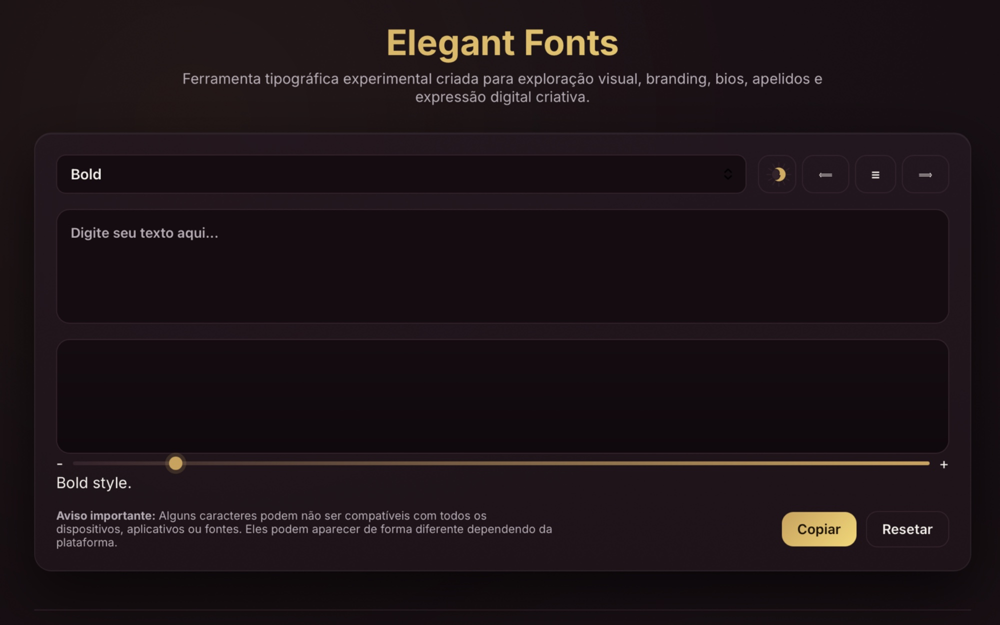

Posicionando a presença
Todo projeto começa entendendo como a marca deve ser percebida — não apenas como ela deve parecer.
Tom, referências e território visual são definidos antes da interface ganhar forma.
DESENVOLVEDOR WEB DE LUXO
Sou Gusthaf Versailles — um desenvolvedor web focado em criar ambientes digitais imersivos onde design, movimento e estrutura coexistem com intenção.
Meu trabalho não é sobre excesso. É sobre presença, controle e um ritmo visual que faz uma marca parecer consolidada desde a primeira interação.
Luxo não é decoração. É contenção, ritmo e clareza.
Cada interface deve parecer intencional, composta e inconfundivelmente presente — desenhada para prender atenção pela atmosfera, não pelo excesso.
Todo projeto começa entendendo como a marca deve ser percebida — não apenas como ela deve parecer.
Tom, referências e território visual são definidos antes da interface ganhar forma.
Eu traduzo a presença da marca em estrutura, composição e hierarquia para que a experiência pareça imediatamente distinta.
É aqui que a elegância se torna sistema — não ornamento.
As telas são moldadas com precisão e contenção, equilibrando clareza editorial com performance técnica.
O resultado é um ambiente digital que parece refinado em qualquer dispositivo.
O movimento é usado com intenção para controlar o ritmo, guiar a atenção e elevar a atmosfera geral da marca.
Um design de interação sutil transforma navegação em presença.

Uma plataforma digital de ferramentas com foco em luxo, criada com presença editorial refinada, movimento contido e uma cadência visual clara para fazer a interface parecer premium de imediato.

Uma experiência institucional construída com contenção visual, espaçamento preciso e uma atmosfera composta para reforçar credibilidade desde a primeira tela.

Um conceito focado em atmosfera, ritmo e profundidade emocional — usando movimento e ritmo visual para tornar a interação imersiva e memorável.
Se você quer uma presença digital com autoridade visual mais forte, é aqui que a conversa começa.
Iniciar projeto